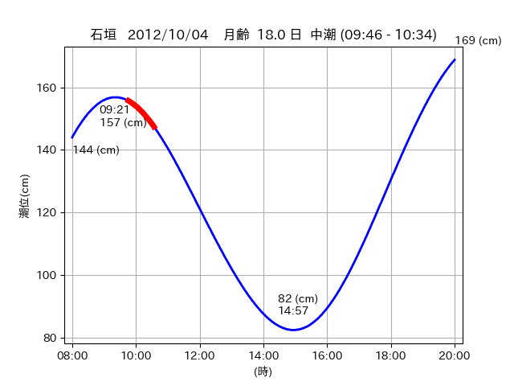

<!DOCTYPE html>
<html>
<head>
    
    <meta http-equiv="content-type" content="text/html; charset=UTF-8" />
    
        <script>
            L_NO_TOUCH = false;
            L_DISABLE_3D = false;
        </script>
    
    <style>html, body {width: 100%;height: 100%;margin: 0;padding: 0;}</style>
    <style>#map {position:absolute;top:0;bottom:0;right:0;left:0;}</style>
    <script src="https://cdn.jsdelivr.net/npm/leaflet@1.9.3/dist/leaflet.js"></script>
    <script src="https://code.jquery.com/jquery-3.7.1.min.js"></script>
    <script src="https://cdn.jsdelivr.net/npm/bootstrap@5.2.2/dist/js/bootstrap.bundle.min.js"></script>
    <script src="https://cdnjs.cloudflare.com/ajax/libs/Leaflet.awesome-markers/2.0.2/leaflet.awesome-markers.js"></script>
    <link rel="stylesheet" href="https://cdn.jsdelivr.net/npm/leaflet@1.9.3/dist/leaflet.css"/>
    <link rel="stylesheet" href="https://cdn.jsdelivr.net/npm/bootstrap@5.2.2/dist/css/bootstrap.min.css"/>
    <link rel="stylesheet" href="https://netdna.bootstrapcdn.com/bootstrap/3.0.0/css/bootstrap-glyphicons.css"/>
    <link rel="stylesheet" href="https://cdn.jsdelivr.net/npm/@fortawesome/fontawesome-free@6.2.0/css/all.min.css"/>
    <link rel="stylesheet" href="https://cdnjs.cloudflare.com/ajax/libs/Leaflet.awesome-markers/2.0.2/leaflet.awesome-markers.css"/>
    <link rel="stylesheet" href="https://cdn.jsdelivr.net/gh/python-visualization/folium/folium/templates/leaflet.awesome.rotate.min.css"/>
    
            <meta name="viewport" content="width=device-width,
                initial-scale=1.0, maximum-scale=1.0, user-scalable=no" />
            <style>
                #map_c18f269f3059ed2e967e596fdac3b63a {
                    position: relative;
                    width: 2048.0px;
                    height: 1600.0px;
                    left: 0.0%;
                    top: 0.0%;
                }
                .leaflet-container { font-size: 1rem; }
            </style>
        
</head>
<body>
    
    
            <div class="folium-map" id="map_c18f269f3059ed2e967e596fdac3b63a" ></div>
        
</body>
<script>
    
    
            var map_c18f269f3059ed2e967e596fdac3b63a = L.map(
                "map_c18f269f3059ed2e967e596fdac3b63a",
                {
                    center: [24.326, 124.193],
                    crs: L.CRS.EPSG3857,
                    ...{
  "zoom": 12,
  "zoomControl": true,
  "preferCanvas": false,
}

                }
            );

            

        
    
            var tile_layer_8184fb3788284f1f491edf9780d8542c = L.tileLayer(
                "https://cyberjapandata.gsi.go.jp/xyz/seamlessphoto/{z}/{x}/{y}.jpg",
                {
  "minZoom": 0,
  "maxZoom": 18,
  "maxNativeZoom": 18,
  "noWrap": false,
  "attribution": "\u5730\u7406\u9662\u5730\u56f3",
  "subdomains": "abc",
  "detectRetina": false,
  "tms": false,
  "opacity": 1,
}

            );
        
    
            tile_layer_8184fb3788284f1f491edf9780d8542c.addTo(map_c18f269f3059ed2e967e596fdac3b63a);
        
    
            var marker_c73d8f82643c333f3e08110f014653a0 = L.marker(
                [24.2533, 124.1316],
                {
}
            ).addTo(map_c18f269f3059ed2e967e596fdac3b63a);
        
    
            var icon_b797ebd869f69ed39b1a507173cd9523 = L.AwesomeMarkers.icon(
                {
  "markerColor": "orange",
  "iconColor": "white",
  "icon": "info-sign",
  "prefix": "glyphicon",
  "extraClasses": "fa-rotate-0",
}
            );
        
    
        var popup_b250e200985c7b0c8c9486973c3f95d1 = L.popup({
  "maxWidth": "100%",
});

        
            
                var html_f31bbe42c0c1865695eec27906c2d2db = $(`<div id="html_f31bbe42c0c1865695eec27906c2d2db" style="width: 100.0%; height: 100.0%;"><table><tr><td></td></tr><tr><td><center>20121004 No.1 </center></table></td></tr></table</div>`)[0];
                popup_b250e200985c7b0c8c9486973c3f95d1.setContent(html_f31bbe42c0c1865695eec27906c2d2db);
            
        

        marker_c73d8f82643c333f3e08110f014653a0.bindPopup(popup_b250e200985c7b0c8c9486973c3f95d1)
        ;

        
    
    
                marker_c73d8f82643c333f3e08110f014653a0.setIcon(icon_b797ebd869f69ed39b1a507173cd9523);
            
    
            var poly_line_76f881fa0333b0316f9a3e9096e974ec = L.polyline(
                [[24.2533, 124.1316], [24.2535, 124.1322]],
                {"bubblingMouseEvents": true, "color": "#FF00FF", "dashArray": null, "dashOffset": null, "fill": false, "fillColor": "#FF00FF", "fillOpacity": 0.2, "fillRule": "evenodd", "lineCap": "round", "lineJoin": "round", "noClip": false, "opacity": 1.0, "smoothFactor": 1.0, "stroke": true, "weight": 3}
            ).addTo(map_c18f269f3059ed2e967e596fdac3b63a);
        
    
            var marker_37694bc71b1ce25b4276dfc92983b2e7 = L.marker(
                [24.2712, 124.1587],
                {
}
            ).addTo(map_c18f269f3059ed2e967e596fdac3b63a);
        
    
            var icon_d93526b62dab57833f99cd5ab2b9b919 = L.AwesomeMarkers.icon(
                {
  "markerColor": "orange",
  "iconColor": "white",
  "icon": "info-sign",
  "prefix": "glyphicon",
  "extraClasses": "fa-rotate-0",
}
            );
        
    
        var popup_bbf700f7d996bd6b0b3f2ea9aaf3b403 = L.popup({
  "maxWidth": "100%",
});

        
            
                var html_5791573a10cc2e1c1ba7ed4aef67887a = $(`<div id="html_5791573a10cc2e1c1ba7ed4aef67887a" style="width: 100.0%; height: 100.0%;"><table><tr><td></td></tr><tr><td><center>20121004 No.2 </center></table></td></tr></table</div>`)[0];
                popup_bbf700f7d996bd6b0b3f2ea9aaf3b403.setContent(html_5791573a10cc2e1c1ba7ed4aef67887a);
            
        

        marker_37694bc71b1ce25b4276dfc92983b2e7.bindPopup(popup_bbf700f7d996bd6b0b3f2ea9aaf3b403)
        ;

        
    
    
                marker_37694bc71b1ce25b4276dfc92983b2e7.setIcon(icon_d93526b62dab57833f99cd5ab2b9b919);
            
    
            var poly_line_c9deffebb8eb6bfe44aeba591a8e951c = L.polyline(
                [[24.2712, 124.1587], [24.2725, 124.1593]],
                {"bubblingMouseEvents": true, "color": "#FF00FF", "dashArray": null, "dashOffset": null, "fill": false, "fillColor": "#FF00FF", "fillOpacity": 0.2, "fillRule": "evenodd", "lineCap": "round", "lineJoin": "round", "noClip": false, "opacity": 1.0, "smoothFactor": 1.0, "stroke": true, "weight": 3}
            ).addTo(map_c18f269f3059ed2e967e596fdac3b63a);
        
    
            var marker_83bae42b65fce6f46fdab3f910993fef = L.marker(
                [24.3273, 124.1946],
                {
}
            ).addTo(map_c18f269f3059ed2e967e596fdac3b63a);
        
    
            var icon_cd1148f033496cafe9078265c07b1c1a = L.AwesomeMarkers.icon(
                {
  "markerColor": "orange",
  "iconColor": "white",
  "icon": "info-sign",
  "prefix": "glyphicon",
  "extraClasses": "fa-rotate-0",
}
            );
        
    
        var popup_0cce1479b4ec782acc50062b11198664 = L.popup({
  "maxWidth": "100%",
});

        
            
                var html_c3fffde907b13b033951afab27a91534 = $(`<div id="html_c3fffde907b13b033951afab27a91534" style="width: 100.0%; height: 100.0%;"><table><tr><td></td></tr><tr><td><center>20121004 No.3 </center></table></td></tr></table</div>`)[0];
                popup_0cce1479b4ec782acc50062b11198664.setContent(html_c3fffde907b13b033951afab27a91534);
            
        

        marker_83bae42b65fce6f46fdab3f910993fef.bindPopup(popup_0cce1479b4ec782acc50062b11198664)
        ;

        
    
    
                marker_83bae42b65fce6f46fdab3f910993fef.setIcon(icon_cd1148f033496cafe9078265c07b1c1a);
            
    
            var poly_line_eeef82b96ba089de61c16cf1843559a7 = L.polyline(
                [[24.3273, 124.1946], [24.3242, 124.1905]],
                {"bubblingMouseEvents": true, "color": "#00FFFF", "dashArray": null, "dashOffset": null, "fill": false, "fillColor": "#00FFFF", "fillOpacity": 0.2, "fillRule": "evenodd", "lineCap": "round", "lineJoin": "round", "noClip": false, "opacity": 1.0, "smoothFactor": 1.0, "stroke": true, "weight": 3}
            ).addTo(map_c18f269f3059ed2e967e596fdac3b63a);
        
</script>
</html>